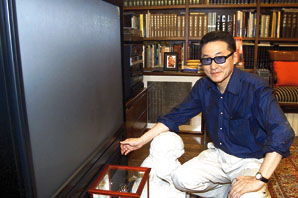

李敖亮相中央電視台

台灣著名作家和政治評論員李敖亮相中央電視台，可惜周五他在台北無法收看大陸中央電視台廣播的他主持的新節目。 （美聯社）
【美聯社台北二十二日電】著名台灣政治評論員李敖是大陸官方中央電視台新節目的主持人。李敖說，這是一個顯示中國領導人對異見者持較寬容態度的跡象。
中央電視台周五播出二十分鐘公共事務節目。該節目首次由台灣人主持。
身為作家和歷史學家的李敖說，中央電視台選他當主持人，是因為他敢於講真話並且不懷惡意。
李敖還希望，每周一次的專題節目可以有助消除海峽兩岸根深蒂固的誤解。李敖贊同兩岸逐步實現統一。他在台灣有線電視亦主持一清談節目。
在周五的節目中，李敖表示，他支持大陸提出的「一國兩制」統一模式。他說，兩岸可以在「一國兩制」下展開競爭，看誰做得更好，況且情形變化迅速，誰能預知五十年後的事情。
李敖說，當年國民黨撤到台灣，從大陸運走九十二萬盎斯黃金，也是造成大陸同胞貧困的部分原因。
(2000/07/22/文匯報)